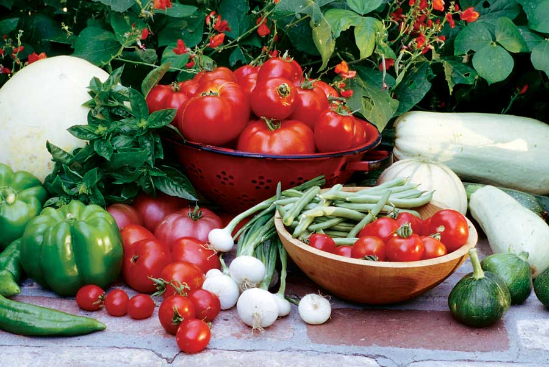

Heirloom vegetables have many advantages over modern hybrid seeds. Most have superior taste and nutrition and have developed resistance to local pests and diseases. Growing heirloom vegetables also allows you to save your own seeds from year to year, which cannot be done with modern hybrid varieties.
PRIZEWINNER GREEN BEANS WITH TOMATOES AND HERBS
Ingredients:
2 tbsp extra-virgin olive oil
1 clove garlic, minced
1/4 tsp red pepper flakes
1/2 cup sliced onions
2 tsp dried ground thyme
1/4 cup water
1 pound green beans, ends clipped, cut in half
1 sprig rosemary, leaves torn off the stem
2 medium tomatoes cut into wedges
Salt to taste or 1 tbsp salted butter
Instructions:
Heat olive oil over medium heat. Add garlic and pepper flakes and sauté until fragrant. Add onions and sauté until translucent, 3 to 5 minutes. Add 1/4 cup water, red pepper flakes, thyme and green beans. Stir, cover and steam-cook beans until nearly done, 10 to 15 minutes. Stir in rosemary and tomatoes. Cook briefly, until tomatoes are warmed through. Season with salt or melted butter. Serves 4.
|
 ROSALIND CREASY This organic harvest includes tomatoes, peppers, summer squash, basil and string beans. |
|
|